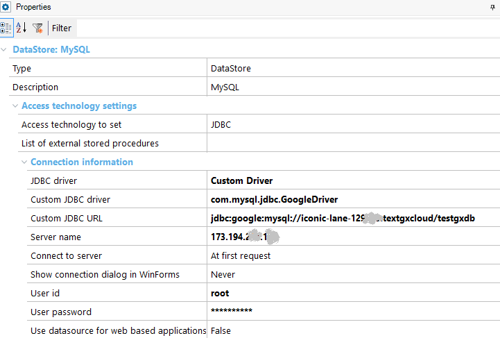

The WAR of an application can be built and deployed automatically using the Deploy Applications tool. Nevertheless, the package built by the tool can also be uploaded manually if you want. To do that, you need to use the appcfg.cmd Google tool. Here we cover the steps to follow after the WAR, or EAR application is already built if you want to deploy such application to Google App Engine manually. Deploying to the Google platform manuallyIn order to take the application to production, follow these steps: 1. Create an appengine-web.xml file under the WEB-INF directory. Note that the Deploy Applications tool already creates an appengine-web.xml file, so if you use that tool, you don't need to create it manually. 2. You can use the appcfg tool utility or glcloud to deploy the app (here we explain the use of appcfg tool). Note: You will be prompted to confirm your account for the first time you upload the application to the cloud. ExampleOpen a command line prompt and execute the following. The War has been decompressed to the "C:\TestGoogleCloudJavaGoogle" path. C:\soft\appengine-java-sdk-1.9.38\bin>appcfg.cmd update C:\TestGoogleCloudJavaGoogle Reading application configuration data... Beginning interaction for module default... 0% Created staging directory at: 'C:\Users\sjuarez\AppData\Local\Temp\appcfg7047062018562894258.tmp' 5% Scanning for jsp files. 20% Scanning files on local disk. 25% Scanned 250 files. 28% Scanned 500 files. 31% Scanned 750 files. 33% Scanned 1000 files. 34% Scanned 1250 files. 35% Scanned 1500 files. 36% Scanned 1750 files. 37% Scanned 2000 files. 37% Initiating update. 37% Cloning 881 static files. 37% Cloning 1236 application files. 40% Uploading 1 files. 52% Uploaded 1 files. 61% Sending batch containing 1 file(s) totaling 2KB. 68% Initializing precompilation... 90% Deploying new version. 95% Closing update: new version is ready to start serving. 98% Uploading index definitions. Update for module default completed successfully. Success. Cleaning up temporary files for module default... After you deploy, your application runs at the URL https://<YOUR-PROJECT-ID>.appspot.com Important NoteIf the application were running in development mode (i.e., locally), use the com.mysql.jdbc.Driver to connect to the Google Mysql instance. Custom JDBC Driver= com.mysql.jdbc.GoogleDriver Custom JDBC URL = jdbc:google:mysql://<application>:<instance>/<database>  In this last case, the appengine-web.xml is as follows: <?xml version="1.0" encoding="utf-8"?> <appengine-web-app xmlns="http://appengine.google.com/ns/1.0"> <application>iconic-lane-12xxxx</application> <version>3</version> <threadsafe>true</threadsafe> <use-google-connector-j>true</use-google-connector-j> <sessions-enabled>true</sessions-enabled> </appengine-web-app>
|